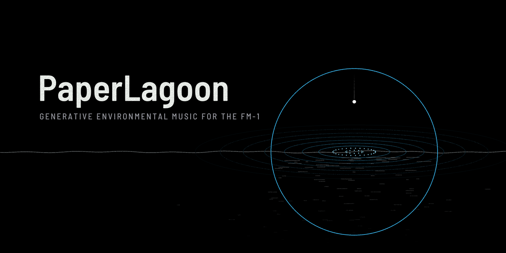

PaperLagoon

PaperLagoon is a generative environmental-music firmware for the M-VAVE FM-1. It plays by itself, and you steer it from outside. The keys play no notes: a press offers something to a hidden state, a drop falls to the water, and the music answers, loosely, and then more slowly. Seven worlds that exist nowhere, ten kits of FM voices, a tape echo and a plate, and a few slow cycles that keep it turning.

This is version 1.1. You install it at your own risk, and the installer can put M-VAVE's own firmware back.
- Try it in the browser. Play it right here, with sound. It runs the same code as the FM-1, so you don't need one.
- Install it from Chrome or Edge, with the FM-1 connected by USB.
- The Manual explains the screen, the pages, the keys and offerings, the worlds and the kits.
- Download paperlagoon-1.1.fwsc to use the command-line installer:
python3 tools/fm1_install.py paperlagoon-1.1.fwsc. - The Source is under GPL-3.0-only. It's built on fm1-base (MPL-2.0) and felucca-bsp, which come from Felucca by Leo Kuroshita, Hügelton Instruments. The plate and the echo come from AMB-1 (MPL-2.0).
M-VAVE and FM-1 are trademarks of their owners. PaperLagoon is not affiliated with M-VAVE.
日本語: FM-1 のための、自動生成の環境音楽ファームウェアです。鍵盤は音を鳴らさず、 押すと音楽に何かを捧げます。使い方は日本語のマニュアルをご覧ください。